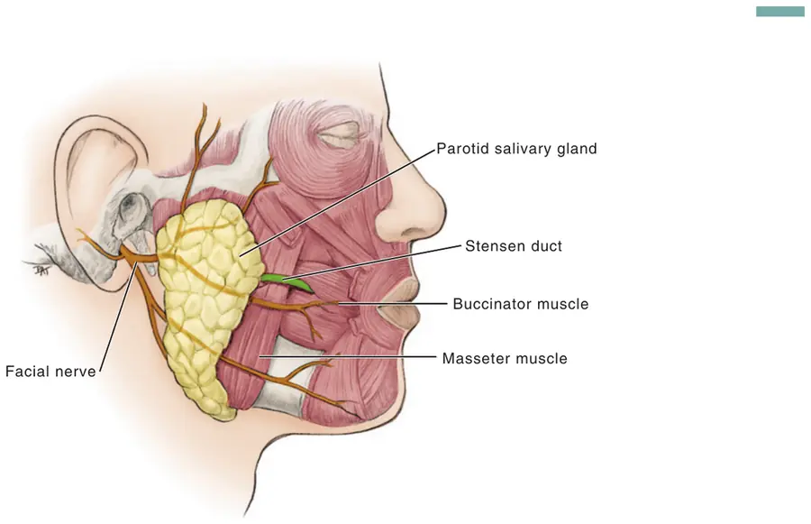
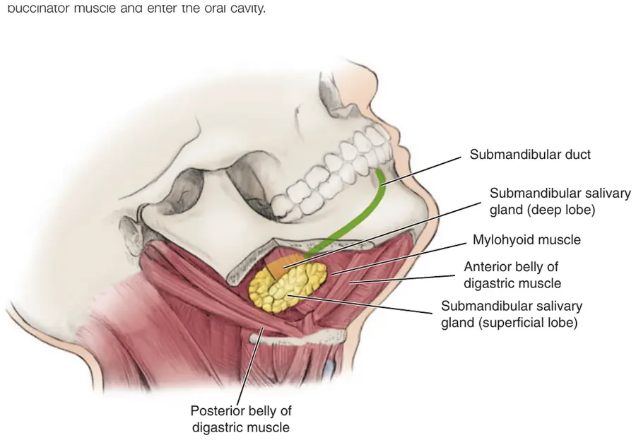

نسخه استخراجشده؛ ترجمه یا تأیید علمی انجام نشده است. وضعیت: captured
غدد بزاقی به دو گروه تقسیم میشوند: غدد بزرگ و غدد کوچک. و همهی غدد بزاقی از حفرهی دهان جنینی، بهصورت جوانههایی از اپیتلیوم که به بافت مزانشیمی زیرین امتداد مییابند، پدید میآیند.

و دو تاریخ جنینی که با هم اشتباه میشوند: غدد بزاقی کوچک از حدود روز چهلم داخل رحم شروع به تکامل میکنند، حال آنکه غدد بزرگ اندکی زودتر، حدود روز سیوپنجم، آغاز میشوند.
و واحد پایهی غدهی بزاقی: از یک آسینوس یا واحد ترشحی ساخته میشود که خوشهای از سلولها شامل سلولهای میواپیتلیال و سلولهای آسینار ترشحی است، و ترشحاتش به مجاری جمعکننده میریزد: مجرای اینترکاله، سپس مجرای مخطط، و سرانجام مجرای دفعی.
و دو نوع سلول آسینار که همهچیز به آنها برمیگردد: سلولهای سروزی که ترشح رقیق و آبکی میسازند، و سلولهای موکوسی که ترشح غلیظتر و چسبناکتری تولید میکنند.
غدد بزاقی کوچک: بین ۸۰۰ تا ۱۰۰۰ غدهی بزاقی کوچک در سراسر بخشهایی از حفرهی دهان که با غشای مخاطی پوشیده شدهاند حضور دارند — با چند استثنا: یکسوم قدامی کام سخت، لثهی چسبنده، و سطح پشتی یکسوم قدامی زبان.
و نامهایشان: لبی، باکال، پالاتین، تونسیلار (غدد وبر)، رتروملار (غدد کارمالت)، و لینگوال. و غدد لینگوال خود سه گروهاند: غدد آپیکال تحتانی (بلاندین و نوهن)، جوانههای چشایی (غدد فونابنر)، و غدد روانساز خلفی.
و غدد بزرگ — سه جفت، یعنی شش غده: پاروتید، سابمندیبولار، و سابلینگوال.
و مجراها:
و کارکرد پونکتوم — که در درس بعد کلید همهچیز است: پونکتوم بخشی تنگشده از مجراست، و کارش محدود کردن جریان برگشتی مایعات دهانی پر از باکتری به داخل سیستم مجرایی است — بهویژه آن باکتریهایی که گرایش به کلونیزه شدن پیرامون دهانههای مجرا دارند، مانند استافیلوکوکوس اورئوس و گونههای استرپتوکوک.
کارکردهای بزاق سه تاست: فراهم کردن روانسازی برای تکلم و جویدن، تولید آنزیم برای گوارش، و تولید ترکیباتی با خواص ضدباکتریایی.

و جای غدهی سابمندیبولار: در «مثلث سابمندیبولار» گردن، که شکم قدامی دیگاستریک، شکم خلفی دیگاستریک، و لبهی تحتانی مندیبل آن را میسازند؛ بخش خلفی-فوقانی غده گِرد لبهی خلفی مایلوهیوئید به بالا میپیچد و مجرای وارتون از همینجا بیرون میآید.
و حجم تولید: غدد بزاقی تقریباً ۱۰۰۰ تا ۱۵۰۰ میلیلیتر بزاق در روز میسازند، با بیشترین سرعت جریان در زمان غذا خوردن.
و سهم هر غده — عددهایی که باید حفظ کنی:
و یک استثنای الکترولیتی که در درس بعد اهمیت پیدا میکند: غلظت الکترولیتهای پاروتید عموماً بالاتر از سابمندیبولار است — بهجز کلسیم سابمندیبولار، که تقریباً دو برابر غلظت کلسیم پاروتید است.
و ویسکوزیتهی بزاق با درصد سلولهای موکوسی و سروزی هر غده متناسب است: بالاترین ویسکوزیته در ترشحات سابلینگوال، سپس سابمندیبولار، و پایینترین در پاروتید.
و یک نکته دربارهی سن: تولید روزانهی بزاق پس از سن ۲۰ سالگی بهتدریج کاهش مییابد — بهعلت افزایش فیبروز داخل پارانشیمی و نیز کاهش تحریک ترشحی عصبی.
و کنترل عصبی — سمپاتیک و پاراسمپاتیک: عصبدهی سمپاتیک از گانگلیون سرویکال فوقانی میآید و از راه شبکهی گستردهی شریانهای صورت به غدد بزاقی میرسد.
و پاراسمپاتیک برای هر غده متفاوت است:
و سه رابطهی عصبی که برای جراح حیاتیاند: